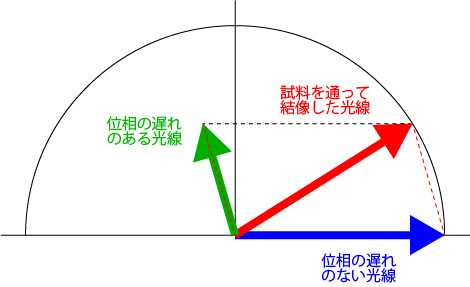
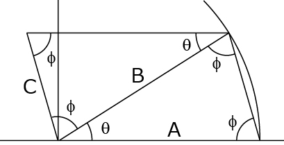
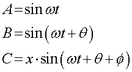
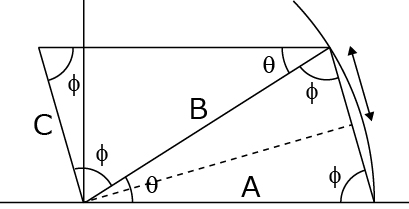
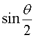
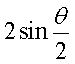
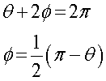
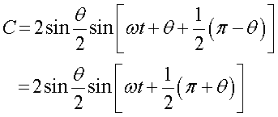
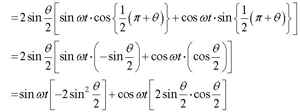
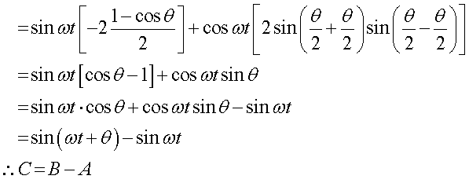

位相において合成 ，分割は成り立つのか？
まず，以下のようなモデルを考えてみましょう．

ここで，赤い矢印である”試料を通って結像した光線”，すなわち若干の位相のずれを持つ光線が，
位相の遅れのない光線，と，位相の遅れのある光線
とに分割（もしくはその逆の合成）が可能か，を考えてみます．
幾何学的に解くと，

このような平行四辺形を考えると楽ですね．つまり，
B = A + C
となればよいのです．また簡単のために，この円の半径を，１，とします．すると，

を満たすことを証明すればよいのですね．
まずは，線分Cの長さ，x，について考えましょう．線分CはAとBで作る二等辺三角形の底辺と長さが等しいので，補助線を引いて，

この矢印の長さは，

なので，その二倍，

となります．
次に，θとφとの関係を見ていきましょう．先ほどの二等辺三角形から，

つまり，

となります．
三角形の公式，sin(A+B)=sinAcosB+sinBcosA，cos(θ+π/2)=-sinθ, sin(θ+π/2)=cosθ(を使って，

さらに公式，sin2θ=(1-cos2θ)/2, sinαcosβ=1/2*[sin(α+β)+sin(α-β)]，から，

となり，位相においても合成，分解が成り立つことが証明されました．